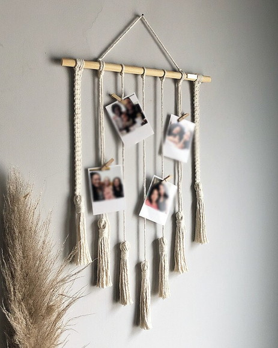
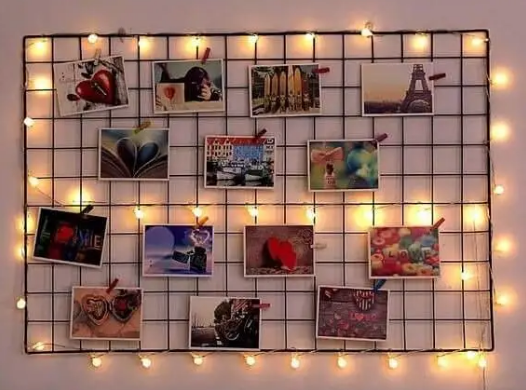
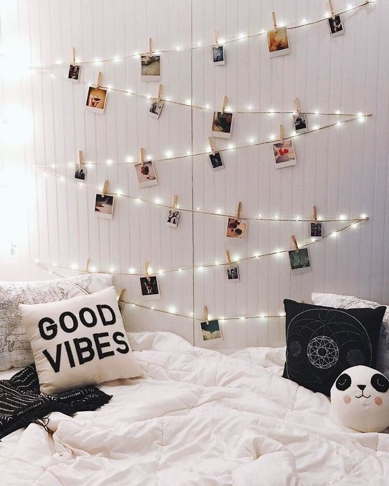
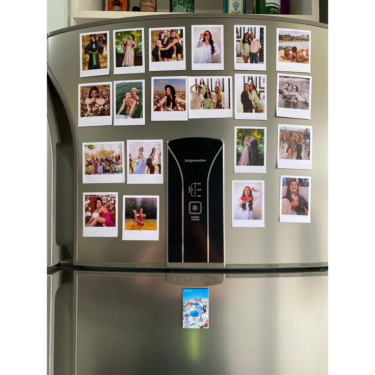

Me chamo Pedro, sou webdesigner, fotógrafo, e programador. E fiquei muito feliz por me solicitar num evento tão importante e único como o aniversário de 1 ano da Aylla!!
Criei este site para simplificar o compartilhamento e o entendimento da proposta do dia do evento, ok?
Fotografia
No momento do evento, os responsáveis devem chamar o fotógrafo para tirar uma foto para o registro e a impressão ocorrer imediatamente, e como medida de segurança dos arquivo, o fotógrafo ficará tirando fotos pela sua camera reserva com a sua ajudante para não perder nenhum momento.
As fotos da camera reserva não serão impressas, logo elas não precisarão ser pagas, apenas as fotos impressas que terá custo.
Sobre a camera e fotos
Eu trabalho com uma camera de impressão em tempo real, conhecida popularmente por Polaroid, registram fotos com garantia de 10 anos, o seu ponto forte é a decoração a ser usada após as impressão dela, como nos exemplos abaixo.

Macramê até 20 fotos, com mini-pregradores: R$55,00

Painel até 10 fotos, com mini-pregradores: R$38,00

Varal até 25 fotos, com mini-pregradores: R$38,00

imãs para 20 fotos: R$25,00
Trabalho em macramês, paineis, varais e imã.
Este video abaixo explica um pouco mais sobre as decorações e suas possibilidades.
Valores
10 fotos por R$ 109,00
15 fotos por R$ 129,00
20 fotos por R$ 159,00
25 fotos por R$ 179,00
Cada foto terá o custo médio de 8 reais, dependendo da quantidade de fotos desejadas, caso deseja alguma das decorações, o valor fica a parte, ok?
E para finalizar, peço para me confirmar até dia 30 de novembro de 2022 para que eu possa me preparar com antecedencia, e vou pedir 50% antecipado para a compra dos materiais usados!